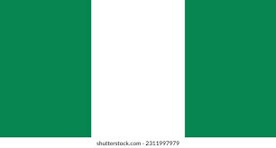

My name is Israel Godwin Essien. I live in Uyo, Nigeria. I am a passionate web developer and student of Brigham Young University–Idaho. I enjoy learning new technologies, solving coding challenges, and building creative web applications. I love reading, exploring new ideas, and working on meaningful projects that help people.
About Me
Uyo, Nigeria

Official Flag of Nigeria
Nigeria is located in West Africa and is the most populous country on the continent. Uyo is the capital city of Akwa Ibom State, known for its hospitality and peaceful environment. Nigeria is rich in culture, history, and natural resources, with vibrant people and diverse traditions.